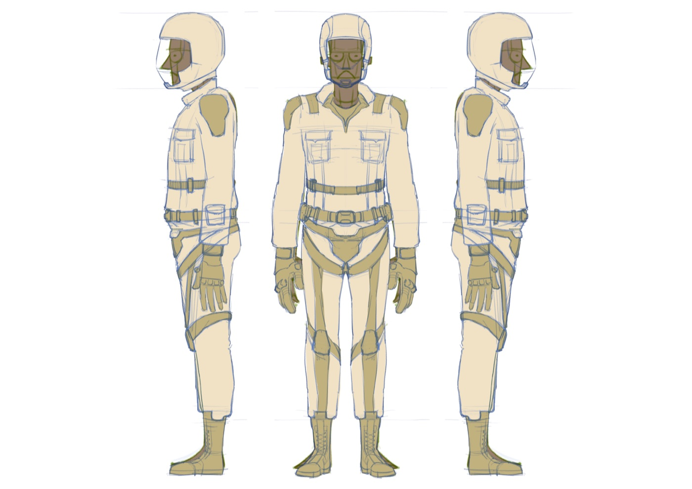
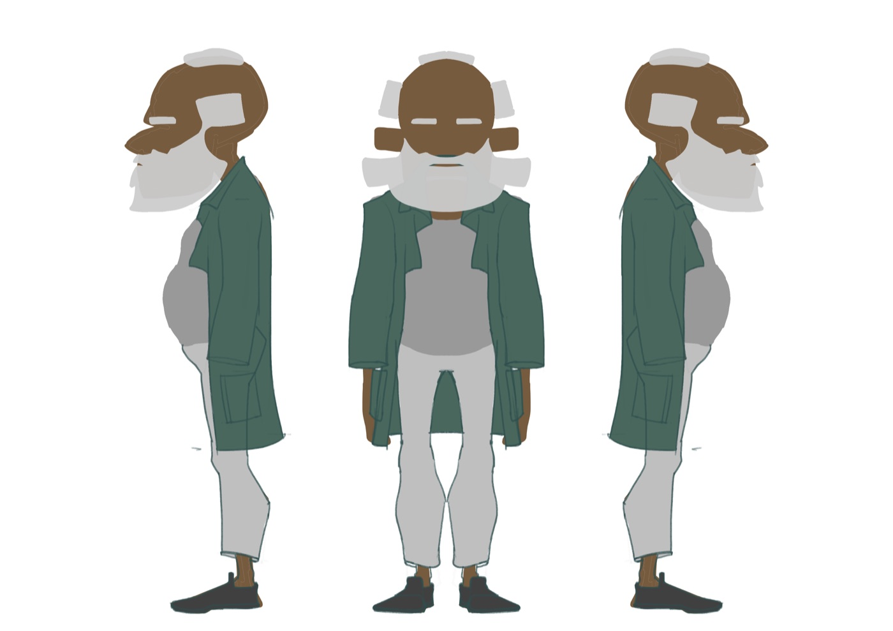
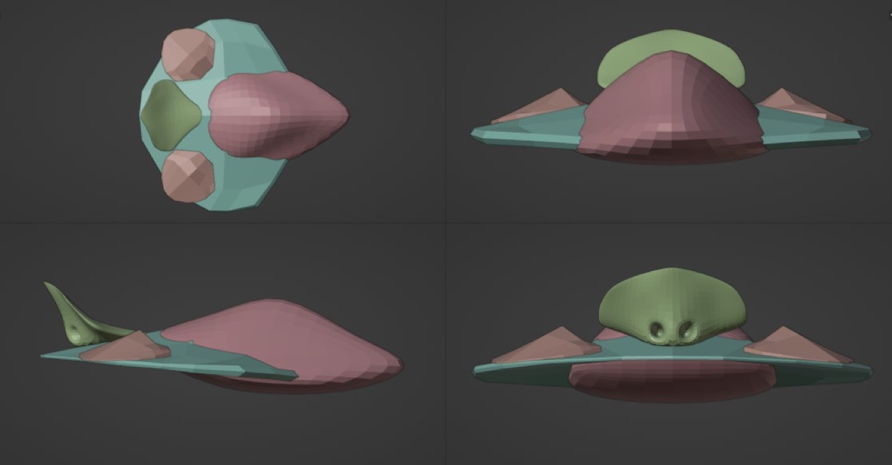
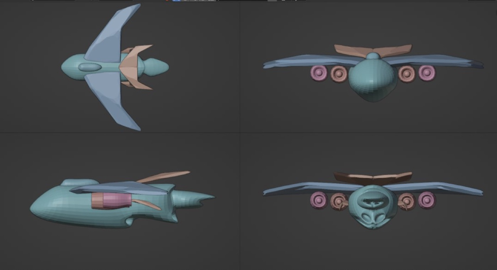
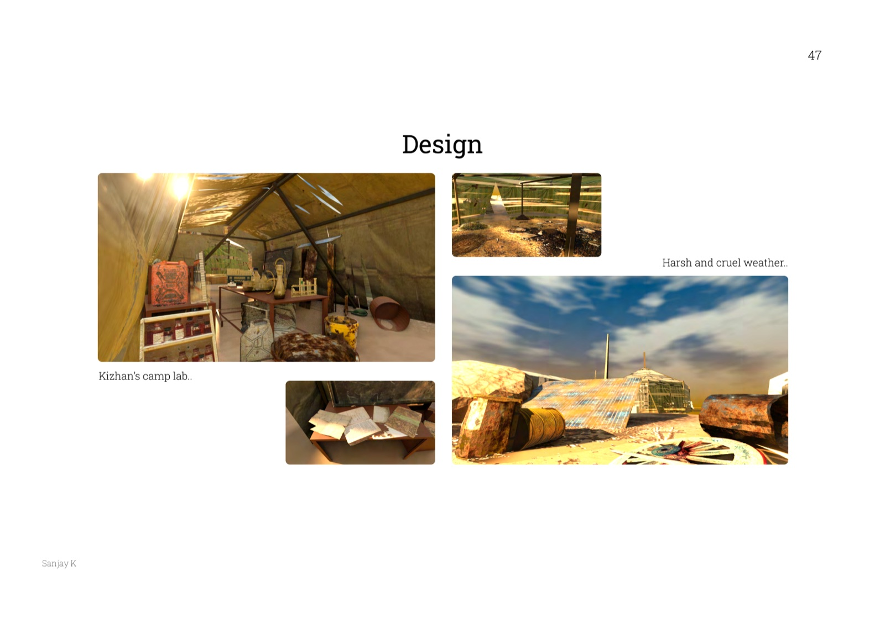
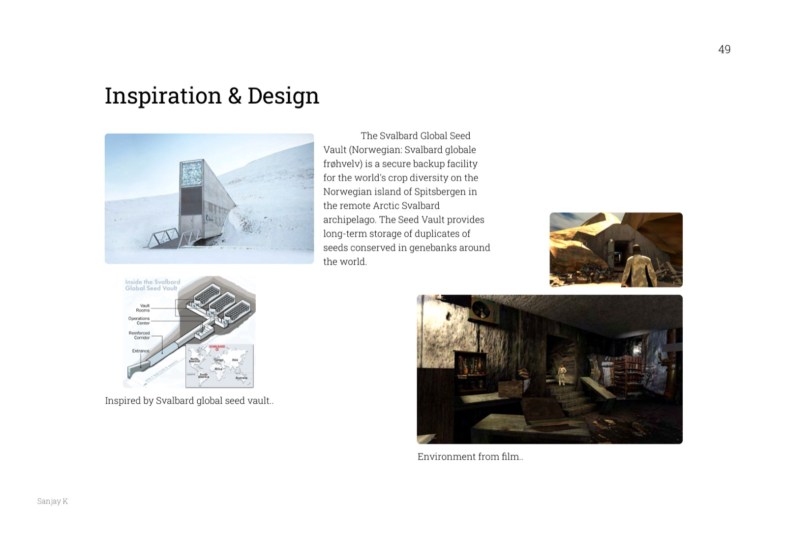
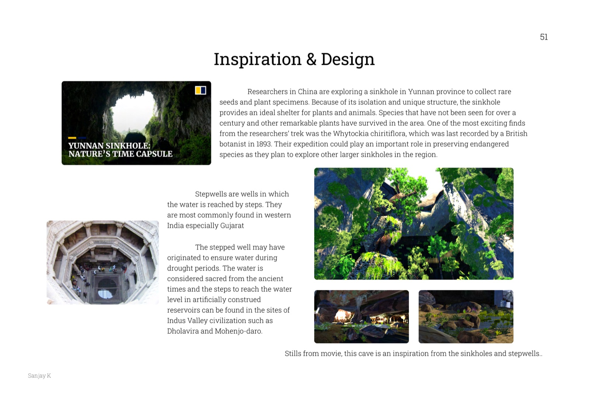

5 Degrees
Earth, centuries past the 5°C tipping point. A young pilot sets out to find the scientist trying to bring farming back to a world that's forgotten how to grow anything.
My graduation film at the National Institute of Design (B.Des, Animation Film Design) — guided by Dr. Shilpa Das, ~15 months from May 2022 to September 2023, presented at jury on 1 September 2023. Working title "VEL."
About myself
I'm from Coimbatore, and I've been drawing since I was old enough to scribble — taught early on by two teachers I owe a lot to, Mr. Padmarajan and Mr. Paruthi Gnanam, who's also the voice of Kizhan in this film. I always loved ecology, agriculture, and forests, and time spent around an environmental NGO called Osai back home gave me the spark to build a film around it. This project happened through NID's Ford Foundation Grant 2022, guided by Dr. Shilpa Das — she gave me the freedom to explore exactly what I had in mind, and this is what came out of it.
Idea for the film
Climate change is a natural process, but we've become one of its biggest accelerants — and one of the outcomes that worries me most is what it does to agriculture. Farming is one of the activities that built human civilization in the first place, and current climate trends are already making it harder to sustain. I wanted to sit with a hypothetical: what happens if we don't just struggle with agriculture, but actually lose the knowledge of it entirely, and a civilization has to try to rebuild farming from scratch in a new normal.
The number in the title is real: studies project 1.5°C more warming by 2030, and 3.5–8°C by 2100. This film is set at the point Earth's average temperature crosses 5°C above baseline — the threshold past which most ecosystems stop functioning. I wanted to explore what the loss of agriculture does to a civilization at that point, partly to shift perspective on the issue we're already facing now, and partly for myself — seeing it this way helped me understand the past a little better and think harder about the future.
Story
In the future, leftover humans on Earth completely lose the knowledge of agriculture as a result of climate change over centuries. Kizhan, a senior research scientist, on his way to reinvent the ancestral way of farming, discovers the descendants of a farming community alive in the most isolated part of the planet. He tries his best to gather support for his idea at his research institute, giving speeches at conferences, yet fails to earn people's trust. A young pilot, Velan, listens to one of Kizhan's speeches and decides to go looking for him years later. What Velan finds on that journey isn't what he expects.
Script
An excerpt from the opening — Velan's night launch, and the title reveal.
Storyboard
The board went through six full revision passes between August and September 2023, growing from 41 to 76 panels by the final round.
76 panelsView the full storyboard
Velan
Velan is a research scientist and pilot at ESRI, Antarctica. Training there brings him into contact with Kizhan, a senior researcher whose theory on rejuvenating Earth's ecosystems fascinates him enough to eventually go looking for him. His name means "person skillful in soil and agricultural activities" in Tamil. His design was inspired by my childhood friend Prasanna Srikanth.

Kizhan
Kizhan is a senior research scientist at ESRI specializing in agriculture and food production — a persistent, hardworking idealist who, after years of trial and error, finds a way to grow food again. His name means "a wise old person" in Tamil. He's a direct homage to G. Nammazhvar (1938–2013), the Tamil organic-farming pioneer and environmental activist whose work I grew up around — he spent much of his life touring South India training farmers in ecological methods and founded Vanagam, a research and training trust for organic farming in Karur.

Small fly
The small fly is the everyday transport vehicle used within the government for domestic travel — the one Velan flies. It's inspired by a hummingbird crossed with an old-school van.

Pecaplane
The pecaplane is the biggest flying machine in the world, used by people and the military mainly for cargo. It's inspired by one of the largest birds native to the Indian subcontinent, the peacock, crossed with big cargo planes.

World
A post-apocalyptic Earth: the ice reserves have melted completely, coastal cities have drowned, and centuries of extreme climate have wiped out nearly all human life. A small, privileged few survived by building a community in what's now the only green, habitable continent left — Antarctica, ice-free at 5°C past baseline. Ninety percent of the world's population, plants, and animals are gone. What's left are nomads and rogue groups scavenging to survive, a fraction who've colonized Mars and other bodies, and a very small population governing Earth from ESRI (the Earth Science and Research Institute) in Antarctica.
Camp site
An isolated site on a remote, desert continent, found by Kizhan through years of research. He builds an artificial growing ground here for his food-production experiments — not the easiest place to do plant research, with dry surface soil and sand winds and hurricanes year-round.

Bunker
An old underground bunker once used to store and preserve seeds, now destroyed by wars and years of poor maintenance. It's modeled directly on the real Svalbard Global Seed Vault — a secure backup facility in the Arctic that holds duplicate seed stock from genebanks around the world.

Cave
A hidden hotspot with the rare potential to sustain life, discovered centuries earlier by indigenous survivors who used it to hide out — and which Kizhan later helps them turn into a working farm. It draws on two real references: a sinkhole in China's Yunnan province where researchers still find century-old plant species thought lost, and the stepwells of western India, ancient stepped water reservoirs found at Indus Valley sites like Dholavira and Mohenjo-daro.

Conference
The conference scene happens at ESRI's annual meet, in front of the institute's governing authority — Kizhan's stage for making his case and trying to win support. The presentation itself plays as a montage combining real-life footage, illustrated images, and GIFs of the events that led to humanity's collapse.
Finished shot
Given the timeline, only one shot made it all the way to a final render — the closing pull-back that reveals the dying, ice-free continent from space.
Sound design & music
Sound design and music are by Amrit Balaji Kaliyapperumal. We went minimal by design — a soundscape meant to add a layer to the film non-diegetically rather than replicate reality. Since the story is essentially a journey, we leaned into a suspenseful, thriller-type approach, referencing outer-space sound design for the score. Voiceover for Kizhan is by Mr. Paruthi Gnanam, my art teacher — I wanted a voice with quiet confidence and a dry, simple texture, which suited the character well.
To keep communication clear with Amrit, I wrote a full scene-by-scene sound script. An excerpt, from Velan's landing at the campsite:
Process
Going full 3D came out of my experience on earlier classroom projects — "Madan and Family" with Neelesh Ram S, and a 3D course in my 7th semester — and the treatment idea borrows from another classroom project, "the Robot," in trying for that same surreal-visuals style.
For environments, I used a hybrid of solid 3D geometry and image planes to fake depth — treating environment images by their materials with height and normal maps, a technique I picked up from 3D artist Ian Hubert. For grass, that meant faking height/normal maps on image planes driven through a particle-hair system, instead of modeling every blade. It took a lot of trial and error to find a workflow that didn't overload the system while still holding up visually.
Character animation mostly used Non-Linear Animation (NLA) — a game-industry-standard workflow where individual animation clips sit on layered strips you can combine and tweak later, similar to how you'd work in Photoshop's layers. The Graph Editor did most of the heavy lifting for timing and spacing once a lot of bones were involved.
For materials, I leaned on a low-fidelity, vectorized-image look — converting real photos into vector art in Illustrator to get a hand-drawn feel instead of straight photorealism. For the cave especially, I built a master material in Blender's node editor that could drive several different tree/plant variations (trunks, leaves, flowers, grasses, creepers) off one shared setup combined with a particle system — a much cheaper way to fill a natural environment with variation than modeling every plant type separately, and a technique borrowed from how games handle vegetation at scale.
Background-crowd characters came from Mixamo's free character library; a few others (the group practicing agriculture in the cave) were reused from an earlier project of mine.
My learnings
The biggest takeaway: everything is a process, nothing is perfect until the process is complete, and the process never really stops. I was hard on myself early on trying to finish things in strict order — environment before shots and cameras, models before animation — when it turned out to be far more efficient to move on several fronts at once. I also went in with only a rough understanding of Blender, and had to unlearn a lot along the way, leaning on friends for help until it started feeling comfortable.
I loved the environment and lighting work most — the opening sequence, getting the small fly's lighting to sit right, taught me how much of a virtual world's mood comes down to just that. I also learned the hard way that I tend to overload myself early and burn out by the end; time management was a real problem throughout, since I was often figuring things out as I went rather than planning ahead. It wasn't an easy project to carry mostly solo — a lot of distinct skill departments to switch between — but I enjoyed almost every part of building this world.
Tools
- Blender — modelling, animation, rendering
- Adobe Creative Suite, Krita, Infinite Painter
- Figma for documentation, PureRef for reference boards
- Textures.com & AmbientCG for textures, Blender Market & Sketchfab for models
- Freepik & Adobe Stock for images, Pixabay & Freesound for sound
- Adobe Mixamo for background characters
Acknowledgement
The project took about 15 months, May 2022 to August 2023, and it was a real roller coaster — a lot of research and enthusiasm early on, a rough patch in the middle where I had to take a prolonged break for a back injury and just wasn't able to work, and a hard pull back to motivation afterward. My parents, friends, and well-wishers got me through that stretch, and looking back, the whole 15 months taught me more about process, discipline, and honesty than almost anything else at NID.
Rigging was done by Neelesh Ram S, my batchmate, using Blender's Rigify tool. Prasanna Srikanth's likeness shaped Velan's design. Dr. Shilpa Das guided the project throughout and made the sponsorship possible in the first place. Amrit Balaji Kaliyapperumal built the sound design and score, and Paruthi Gnanam — my art teacher since childhood — voiced Kizhan. Prabagaran and Haritha SI helped with early story and ideation discussions, and Deenadayalan C, Prasanna Srikanth, Thiru Vignesh, Prajaktha Hardikar, and Sruthi Ganesh gave feedback along the way. None of this happens without my family, either — my mother Hema, my father Krishna Bharathi, and my grandmother Dhanalakshmi stood by all of it, even when it took far longer than any of us expected.
Bibliography
Climate science references from The Conversation, NOAA, BBC, Scientific American, and the World Resources Institute; research on G. Nammazhvar's life and work; visual development references from Britannica and Sciencing; and several CC-licensed base models and assets from Sketchfab used in early exploration.
← Back to Selected Work